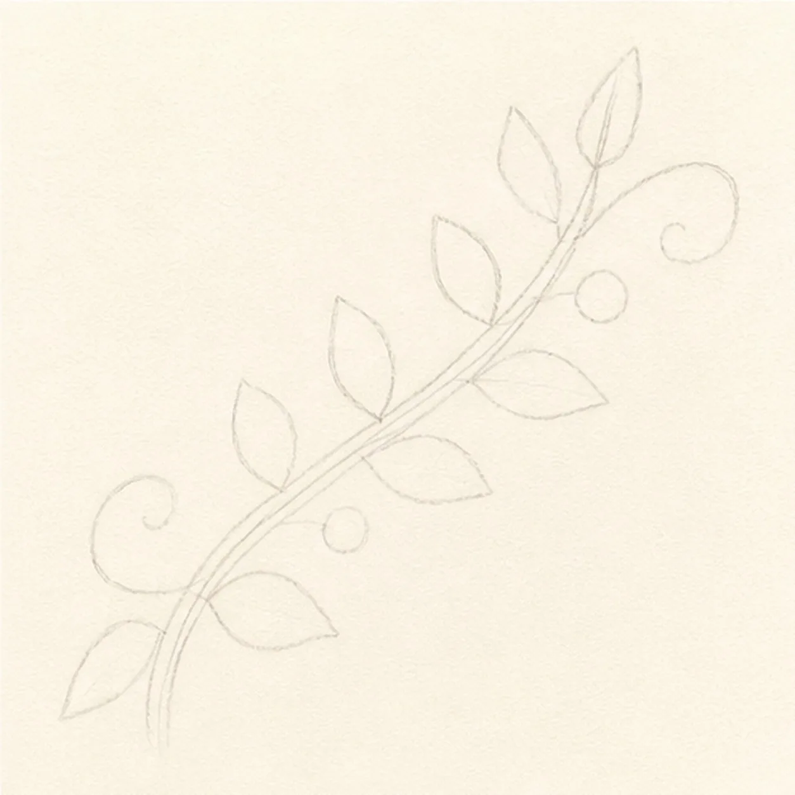
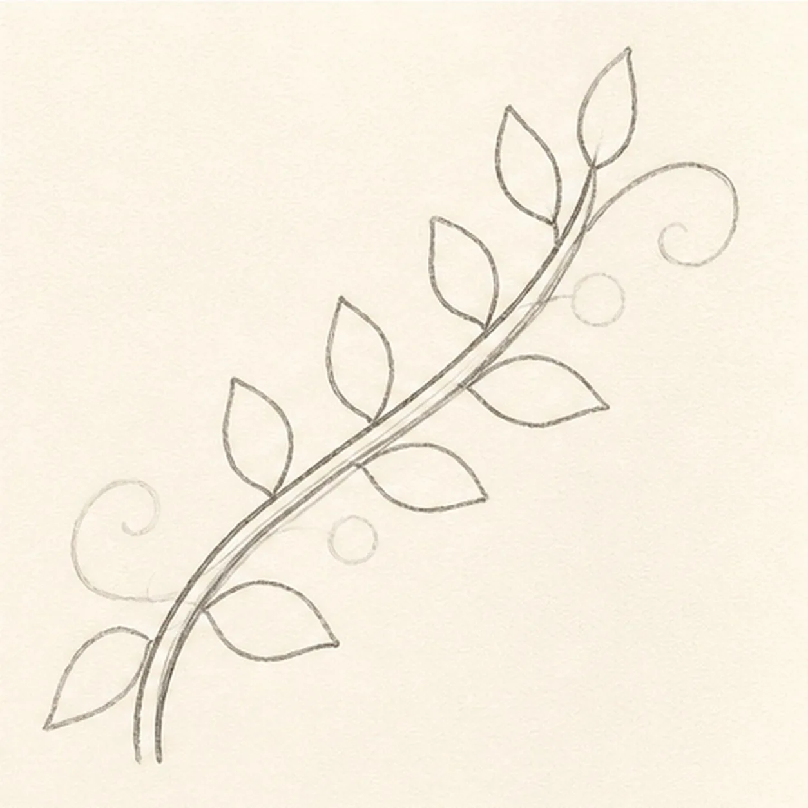
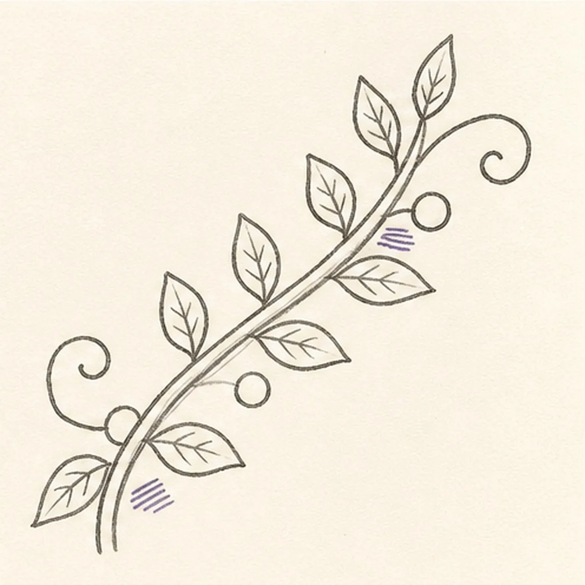
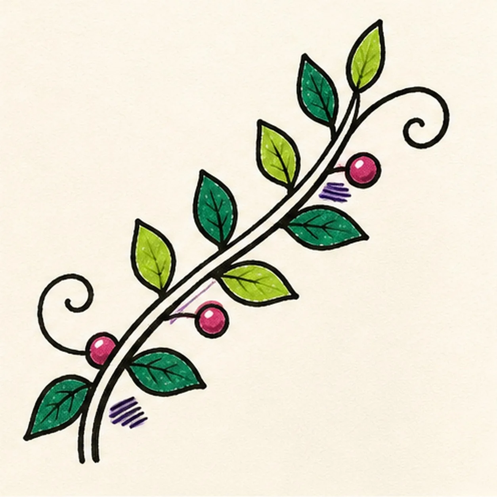

Felt-tip marker mode
Let's draw a leafy vine flourish
Treat this as one playful practice round: sketch the idea loosely, simplify the shapes, then commit with confident marker outlines and bright fills.
-
01

Sweep the vine path
Draw one pale diagonal S curve with a parallel stem-width guide, then reserve exactly eight alternating leaf footprints, two tendril routes, and three berry positions.
Marker tip: Ghost the whole S curve twice before touching down. Space the eight leaves in a loose zigzag and mark all three berry circles now so the flourish stays balanced instead of becoming crowded at one end.
-
02

Shape eight leaves
Connect the guides into one tapered double-line vine and wrap all eight footprints with varied pointed leaf silhouettes.
Marker tip: Turn the page so each leaf curve pulls toward you, making one side fuller than the other. Count four leaves on each side of the stem before moving on.
-
03

Curl tendrils and veins
Add exactly two curling tendrils, three round berries, a midrib with a few side veins inside each leaf, and two small clusters of three violet stem-shadow hatch marks.
Marker tip: Let both curls end with open breathing room and angle the veins toward each leaf tip. Keep the violet hatch groups short so they read as rhythm accents rather than a third branch.
-
04
Ink the botanical rhythm
Thicken every established stem, leaf, tendril, berry, vein, and overlap with imperfect black felt-tip lines while preserving narrow paper highlights.
Marker tip: Pull the long stem edges in separate passes and vary pressure around the leaf tips. Let one side dry before rotating the page so the black edges stay crisp without becoming mechanically uniform.
-
05

Color the curling vine
Fill the established leaves in alternating deep jade and chartreuse, the three berries raspberry, and both hatch clusters violet while leaving visible marker streaks and small paper highlights.
Marker tip: Color each leaf from stem to tip and keep its assigned green through the finish. Work around the berry highlights instead of trying to add white over wet raspberry marker.
-
06
Let the vine unfurl
Strengthen selected keeper outlines and clarify the established eight leaf fills, two tendrils, three berries, veins, violet hatches, and open-paper highlights without adding another botanical form.
Marker tip: Count eight leaves, two curls, three berries, and two hatch clusters, then stop while the paper and marker grain still show. A flower, wreath, face, border, or lettering would turn this focused flourish into a different lesson.
![Handmade face-free felt-tip marker drawing of one thick forest-green garden hose forming one loose lower-left loop with a single over-under crossing, connected to one burnt-orange pistol-grip spray nozzle angled toward the upper right with one open-paper barrel collar, one cream trigger, one cream connector, exactly three black handle grip ribs, exactly three curved muted-blue water jets, exactly two detached blue drops, one open-paper highlight on the hose and one on the handle, thick imperfect black outlines, visible marker streaks, and one short flat irregular deep-navy ground-shadow patch](../assets/garden-hose-with-spray-nozzle-finished-v1.webp)
![Handmade face-free felt-tip marker drawing of one plump raspberry-and-coral heart tilted slightly clockwise with one teal adhesive bandage crossing diagonally from lower left to upper right, one warm-yellow center pad, two rounded adhesive ends with exactly four open-paper ventilation dots total, two open-paper oval heart highlights, exactly two small warm-yellow sparkle accents, thick imperfect black outlines, visible marker streaks, a few pale construction traces, and one broken deep-navy shadow](../assets/heart-with-a-bandage-finished-v1.webp)
![Handmade face-free felt-tip marker drawing of one open book in a shallow three-quarter view with exactly two blank page blocks, one black V-shaped center gutter, one coral ribbon bookmark hanging from the gutter, one small curled outer corner on each page, exactly three stacked warm-yellow lower page-edge bands per side, raspberry marker fill across the left page and cover plane, teal marker fill across the right page and cover plane, small open-paper cover-edge highlights, thick imperfect black outlines, visible marker streaks, restrained edge hatching, and one broken deep-navy shadow](../assets/open-book-with-ribbon-bookmark-finished-v1.webp)